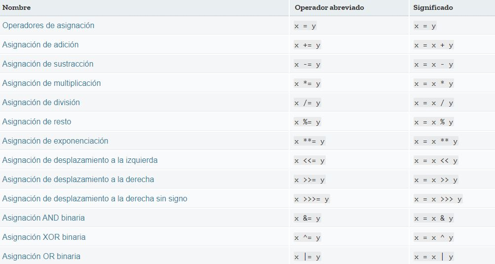

Un operador de asignación asigna un valor al operando de la izquierda en función del valor del operando de la derecha. El operador básico de asignación es el de igual (=), que asigna el valor del operando de la derecha al operando de la izquierda. Por ejemplo, x = y, está asignando el valor de y a x.
También existen operadores compuestos de asignación que son la forma abreviada de las operaciones de la siguiente tabla:
